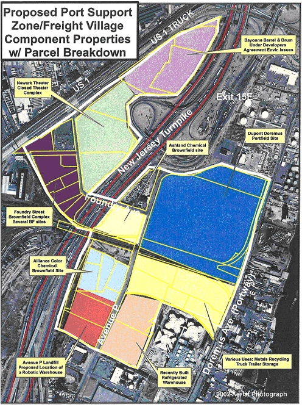

Fact Sheets: Freight, Trade, Neighborhood and Industrial Association Activities
Creating a freight task group (with public, private, and educational sector stakeholders) is an excellent way to integrate freight concerns and issues into a transportation planning and education process. Through the group’s membership, technical advice to improve land use planning, and integrating freight more effectively into the comprehensive plan can be developed. Here are some examples.
The Northwest Industrial Neighborhood Association – Portland, Oregon
The Northwest Industrial Neighborhood Association (NINA) was created with a mission to protect and enhance the industrial business climate of the northwest industrial district in the Portland Oregon area. As part of this, they are endeavoring to assure the integrity of the Guilds Lake Industrial Sanctuary that was created in 2001, and they came under attack in a lawsuit in 2005.
NINA’s main goals are:
- To assure the integrity of the Guilds Lake Industrial Sanctuary
- To facilitate freight mobility for the benefit of industrial commerce
- To assure river access values
- To facilitate ease of business operations relative to city, county, and state regulations
- To keep lines of communication open between members and interested parties
- Provide equipment maintenance and storage
- Provide truck parks and other facilities
North American Super Corridor Coalition
The Educational Consortium during 2010, to further coordinate initiatives along the corridor. The education consortium will play a vital role in training the next generation of transportation planners, engineers, and innovators.
According to NASCO,
NASCO is committed to uniting the public and private sectors, and academia, to work with a common voice along our Corridor to solve critical national and international transportation and environmental problems. In a time where funding and resources are scarce, NASCO is committed to working with the Corridor educational institutions to streamline, coordinate and reduce the duplication of efforts in the areas of research, studies and testing of innovative technologies, and to maximize opportunities to share information tri-nationally with the NASCO Corridor educational institutions.
New York/New Jersey Port Support Zone
The New York Shipping Association created the Port Support Zone (which is also known as the Logistics Support Zone) to protect, encourage, and develop off-port facilities to:
The goal is to enhance port operations while reducing congestion, removing industrial/commercial operations from residential neighborhoods, and improve quality of life.
The Association collaborated with the Metropolitan Marine Maintenance Contractors Association, as well as the State of New Jersey, City of Newark and others to produce a development strategy that recognizes the critical nature of the maritime facilities that serve interests of urban areas. The Port Support Zone has become a major project within the community, and has been supported by the Nation’s Port Advocacy Group that represents a wide array of commercial interests serving the ports of New York and New Jersey.
The Port Support Zone provides close-in (1 to 5 mile radius) dedicated areas to conduct port-related operations that do not require access to the pier. By removing those activities that do not contribute directly to vessel operations, and reducing impacts to surrounding residential communities, this is expected to create new on-dock space for increased cargo volumes without having to expand port land areas. Activities that would be provided within the zone include container depots, overnight secure truck parks, remanufacturing and maintenance, surge capacity facilities, transload facilities and heavy weight facilities.
Figure 2. Port Support Zone Radius.

Source: www.nationsport.org.
As part of the program, for example, the development of secure truck parks equipped with electric hitching posts, for trucks and refrigerated units to use is anticipated to dramatically reduce traffic, noise, and air pollution. By providing such a zone, the initiative hopes to improve safety for local citizens, reduce truck travel, enhance security of cargo and keep trucks off city streets and residential areas (especially overnight).
Another component of the program is the development of heavyweight distribution centers and transload facilities within the port support zone. Freight logistics areas are also envisaged to encourage development of consolidated, high density, self-contained multi-use facilities for management of freight in a strictly controlled, geographically designated area. Again, the goal behind this is to enhance freight movement from port to customer, while segregating these industrial operations from residential neighborhoods.
Figure 3. Port Support Zone/Freight Village Area Parcel Map and Land Use Codes.
